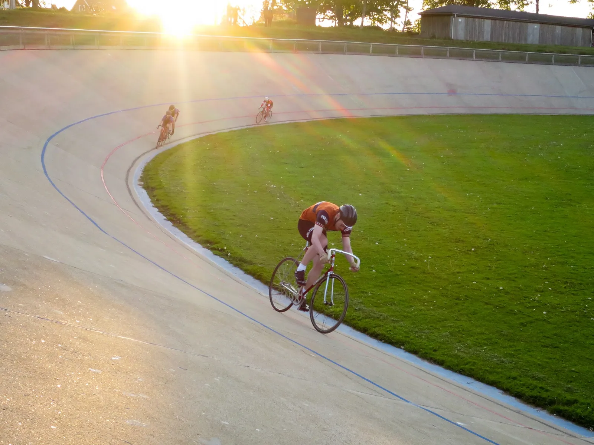
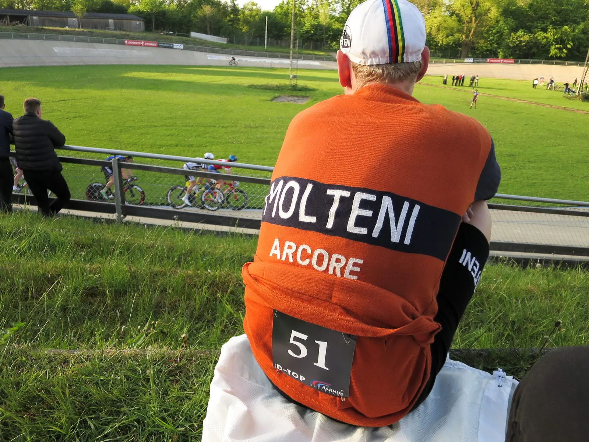
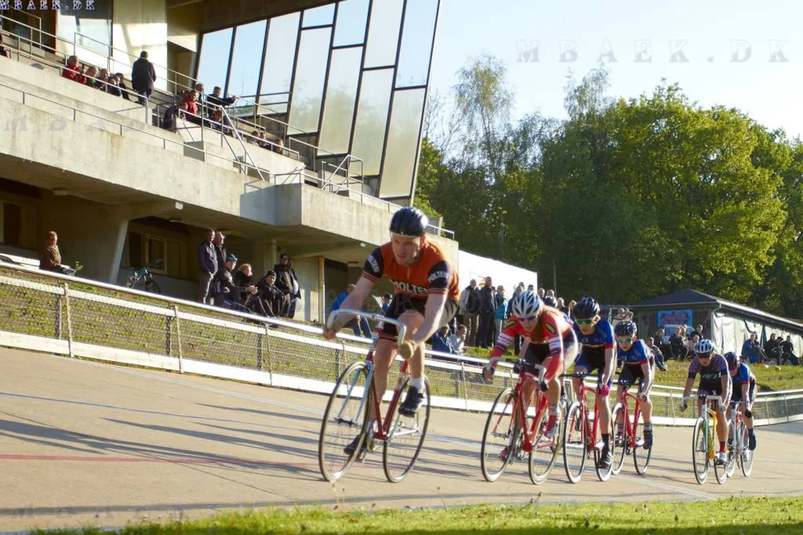

Gunnar Asmussens Æresløb 2016

På en tidlig og halvvåd sommeraften kørte Squadra Molteni endnu et resultat hjem. Holdets unge løjtnant, Kasper Sørensen sluttede på den sidste podieplads til Gunnar Asmussens Æresløb 2016.
Det skete på Aarhus Cyklebane fredag aften. Han undgik også kun med nød og næppe en advarsel fra løbskommissærerne.
Det skal være tørvejr, når man kører på en udendørs cykelbane, og en snigende regnbyge truede afviklingen af løbet for andet år i træk. Men aftensolen brød hurtigt igennem, og tørrede den våde cementbane, der hele vinteren blot har ventet på sæsonåbningen her i maj.
Jernhårde Ladies og en rutineret ræv
Kasper stillede op som eneste rytter for holdet i C-klassen, som bestod af en håndfuld stærke unge talenter fra Aarhus Cyklebane, et par jernhårde ladies fra Odense og en lokal rutineret ræv.
Første løb var linjeløbet, og her lagde Kasper ud i et hårdt tempo forrest i feltet. Han krydrede det med et par soloangreb, som han senere forklarede med, at han ville sikre nogen fede billeder til fotografen.
I sidste sving strøg de fleste ryttere forbi, og han måtte nøjes med et enkelt point for femte pladsen. En modbydelig hård disciplin at køre fra front.

– Løbsarrangørerne havde venligst givet mig nummer 51, og dét nummer forpligter jo. Ikke kun fordi det var det nummer, Eddy Merckx havde, da han vandt sin først Tour de France titel i 69′. Men også fordi det har så mange Tour-sejre på samvittigheden, og som, udover Eddy Merckx, tæller ryttere som bl.a. Bernard Hinault og Luis Ocana, fortæller Kasper.

Manglende rutine kostede næsten en advarsel
Kasper havde dog været sjusket med sit hjemmearbejde, og i sin uvidenhed sat sit rygnummer på som til landevejsløb. Det kom en kommissær for øje, som truede med en advarsel, hvis ikke det blev vendt på siden, da de ellers ikke kunne se det, når de drønede forbi på langsiden.
I udskilningsløbet virkede den aggressive taktik noget bedre, og pladsen foran i feltet sikrede ham en tredjeplads i den disciplin. En bedrift han gentog i den sidste disciplin, spurtløbet, hvor han forsøgte en lidt mere afventende taktik.

Sammenlagt gav de tre løb point nok til at slutte på podiets nederste trin, bag vinderen Jan Lyngbye fra Aarhus og Amalie Winther Olsen fra Odense.
Lånte klassiske hjul af baneformanden
Kasper kørte på en stålcykel fra 1974, og havde til lejligheden lånt et klassisk banehjul på Wolber fælg, og med højflange nav, af baneformanden.
Aarhus Cyklebane er et historisk levn fra en svunden guldalder, hvor banecykling trak tusindvis af Aarhusianer til løb. Den udendørs cementbane ligger det samme sted, som den har gjort siden opførslen i 1940. Banen danner den perfekte, nostalgiske, ramme for klassisk væddeløb på stål og i uld.
De to ildsjæle Michael Berling og Johannes Sahl er cykelfanatikere indtil benet, og gør et kæmpe stykke arbejde, for, at vi stadig kan nyde sommeraftener på banen, med musik i højtalerne, pølser på grillen og klapsalver fra tilskuerne, når rytterne drøner over stregen i aftensolen.
Der er flere løb henover sommeren, og Squadra Molteni går i skarp træning for at forbedre tredjepladsen. Kig ind forbi programmet på deres hjemmeside, og kom forbi en sommeraften til øl, pølser og hornmusik.
Næste løb er By-Kamp fredag d. 3. juni. Se programmet her: http://www.aarhuscyklebane.dk/?page_id=3537
Som altid et fantastisk velgennemført arrangement som får fem stjerner.
Nyd billederne der bl.a. er taget af mbaekdk.